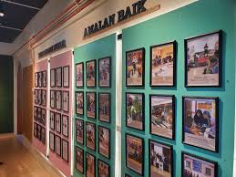

Ruang Kreativitas untuk Menampilkan Karya dan Prestasi Siswa

Galeri SMP Setia Negara merupakan ruang khusus yang digunakan untuk menampilkan berbagai hasil karya siswa, baik dalam bidang seni, keterampilan, maupun proyek pembelajaran. Ruangan ini menjadi wadah apresiasi sekaligus motivasi bagi siswa untuk terus berkarya dan berinovasi.
Selain sebagai tempat pameran, Galeri juga sering digunakan untuk kegiatan edukatif seperti presentasi, pameran tematik, dan kegiatan kreatif lainnya yang melibatkan siswa secara aktif.